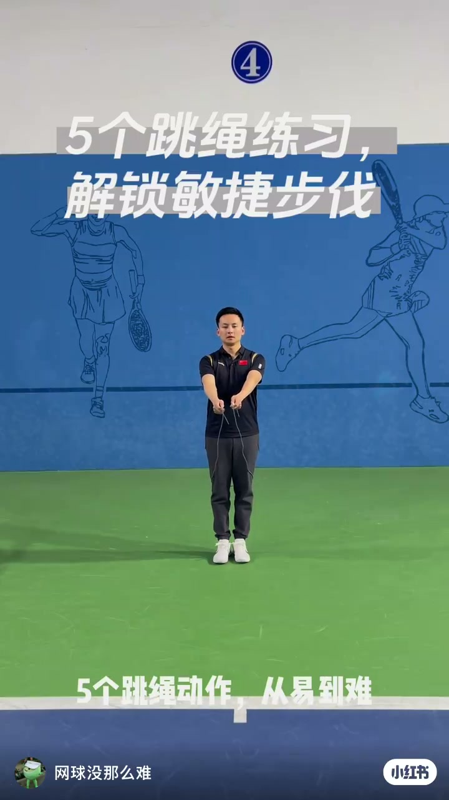
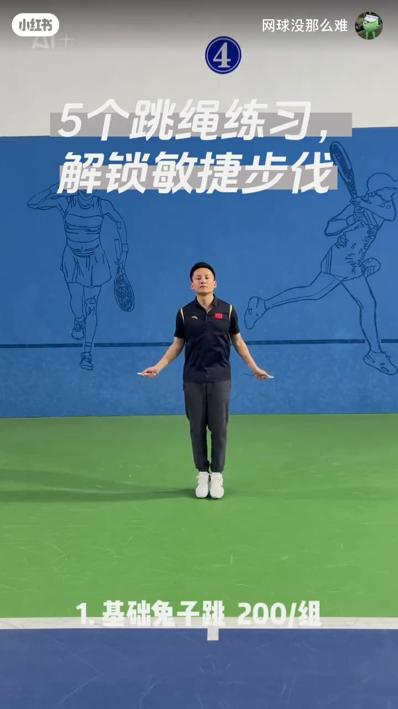
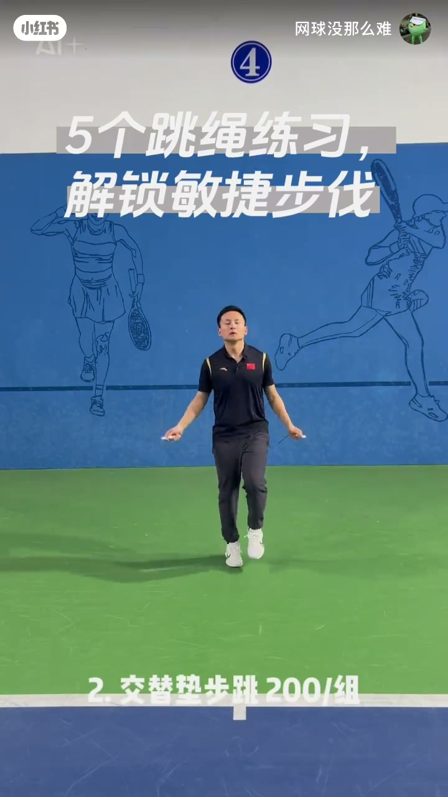
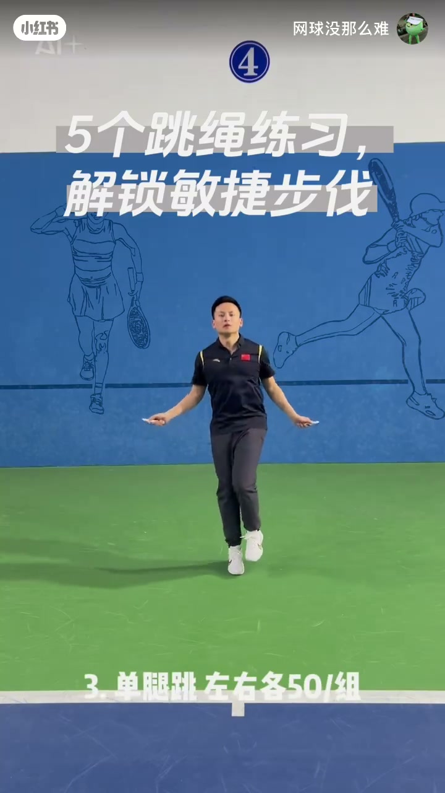
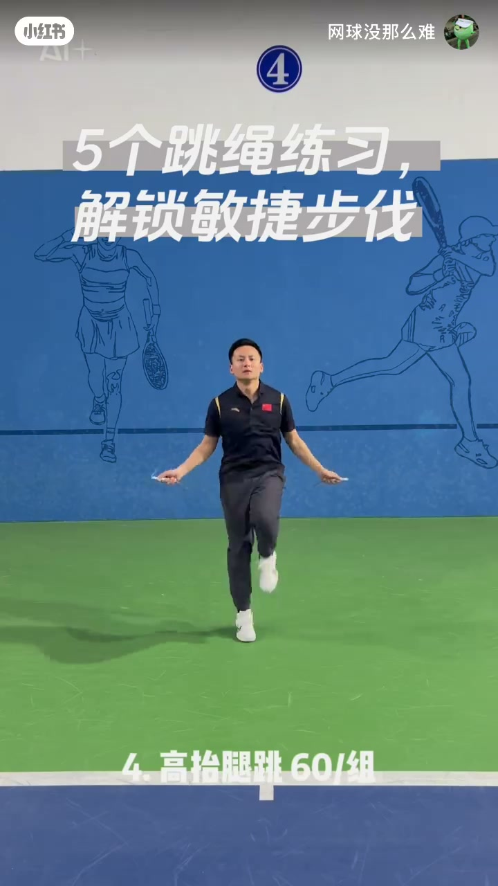
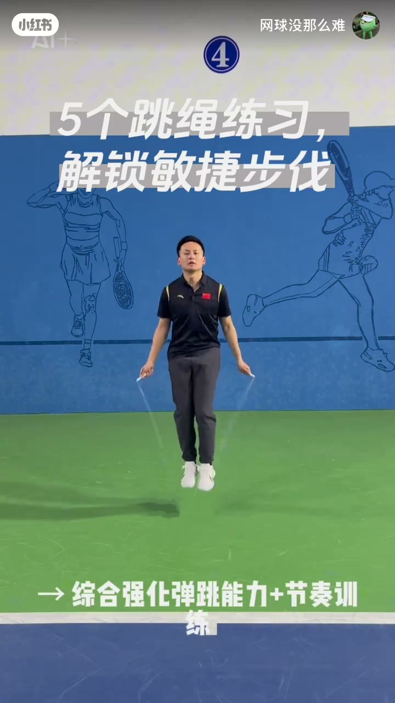

内容要点
这是一支网球场上的跳绳体能短片：目标不是炫技，而是用五档难度逐步解锁敏捷步伐。口播按「动作名 + 训练收益」推进，画面同步给出组次数；最后把收益收束为「更快移动 + 更强下肢稳定」，并落到「掌控全场节奏」的口号。
知识结构
五个跳绳动作从易到难；每天练习，用来解锁敏捷步伐。
基础兔子跳：激活腿部弹跳与爆发力（画面 200/组）；交替垫步跳：强化腿部协调与频率（画面 200/组）。
单腿跳：提升单腿平衡控制与力量（左右各 50/组）；高抬腿跳：增强抬腿频率与核心稳定（60/组）。
进阶双摇综合强化弹跳与节奏；坚持两周将获得更快移动能力与更强下肢稳定性，脚下开始掌控全场节奏。
把网球所需的弹跳、协调、单腿稳定、抬腿频率与节奏，拆成五档可跟练的跳绳动作；按画面次数成组练，两周作为作者给出的最小坚持窗口。
00:00-00:04开场：五个跳绳动作从易到难
视频一开场就立题：五个跳绳动作，从易到难；每天练习，用来解锁敏捷步伐。教练站在绿色网球场上，手里已经握着跳绳，背景是带网球线稿的蓝色墙面——场景本身就在提醒观众：这套练习是为场上步伐服务的。
「五个跳绳动作 / 从易到难 / 每天练习解锁敏捷步伐」

开场未说明观众水平门槛，也未演示热身流程；后文次数来自画面字幕，口播本身只报动作名与目的。
00:04-00:16基础到中阶：兔子跳、垫步、单腿
第一档是「基础兔子跳」：口播说它激活腿部弹跳并加爆发力；画面底部打出「1. 基础兔子跳 200/组」，教练连续双脚轻跳带绳。这一档是热身与弹跳唤醒，难度最低。

第二档切到「交替垫步跳绳」：目的是强化腿部协调性并加频率。画面写作「2. 交替垫步跳 200/组」，左右脚交替着地，节奏明显快于兔子跳，更接近网球里的碎步衔接。

第三档是「单腿跳」：提升单腿平衡控制并加力量。画面标注「3. 单腿跳 左右各50/组」——左右分开计数，强调双侧都要练到位，而不是只练习惯腿。

00:16-00:31进阶与承诺：高抬腿、双摇与两周效果
第四档「高抬腿跳」：增强抬腿频率并加核心稳定。画面「4. 高抬腿跳 60/组」，教练膝盖抬得更高，躯干需要更稳才能连续过绳——这直接对应场上急停变向时的抬腿与躯干控制。

第五档「进阶双摇」：口播称综合强化弹跳能力并加节奏训练；字幕同步写成「综合强化弹跳能力+节奏训练」。这是五档里对节奏与空中时间要求最高的一档。

收束段给出时间承诺与收益：「坚持两周将获得更快的移动能力及强大的下肢稳定性」，并落到口号——「脚下开始掌控全场节奏」。这是作者观点与训练号召，视频未给出对照实验或测量数据；读者可把它当作两周跟练窗口，而不是已被验证的成绩保证。
「坚持两周将获得更快的移动能力及强大的下肢稳定性 / 脚下开始掌控全场节奏」
详细文字转录（17段）
以下内容按 Whisper 原始分段完整呈现，可能包含识别误差。画面次数（200/组、左右各50/组、60/组等）来自视频字幕，口播未逐字报出。
-
五个跳绳动作
-
从易到难
-
每天练习解锁敏捷步伐
-
一 基础兔子跳
-
激活腿部弹跳加爆发力
-
二 交替垫步跳绳
-
强化腿部协调性加频率
-
三 单腿跳
-
提升单腿平衡控制加力量
-
四 高抬腿跳
-
增强抬腿频率加核心稳定
-
五 进阶双摇
-
综合强化弹跳能力加节奏训练
-
坚持两周将获得
-
更快的移动能力
-
及强大的下肢稳定性
-
脚下开始掌控全场节奏